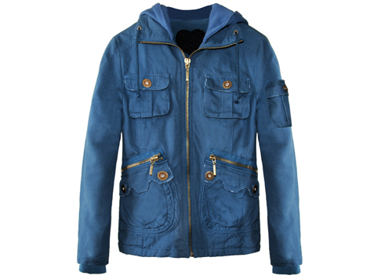

Ok, so a couple of us may not have been completely open with everyone over the past few months. I told my fellow tipsy gal AK its time we come clean.
Confession the first: AK and I are true to the game Twilighters. Don’t hate the players, or the game. Sure we may be a tad behind, but these books–damnation, we couldn’t put them down (see next confession).
Confession the second: AK and I both were known to read said books while driving at stop lights.
Confession the third: I loved these books so much I went into a complete trance while reading. Also, I love the name Emse so much, I’ve called dibs if I have a girl 🙂
And finally, I have to have this jacket:

Twilight Jacket – holy hell, I am totally in love. Just the thing I need. Combines my love for Twilight, hoodies and all things awesome.
Oh, one more thing–TEAM EDWARD BABY!


Recent Comments